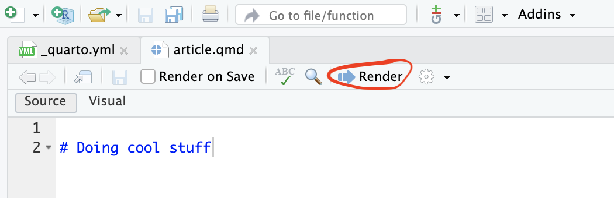
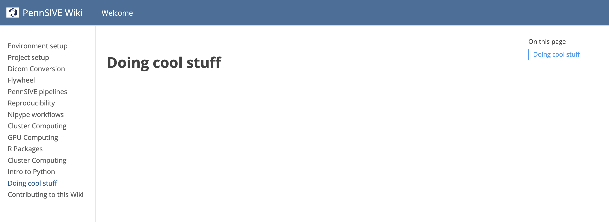
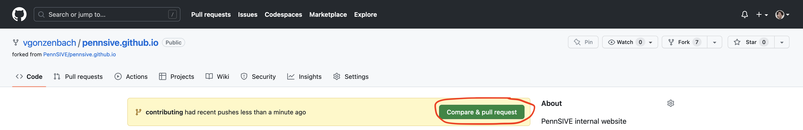
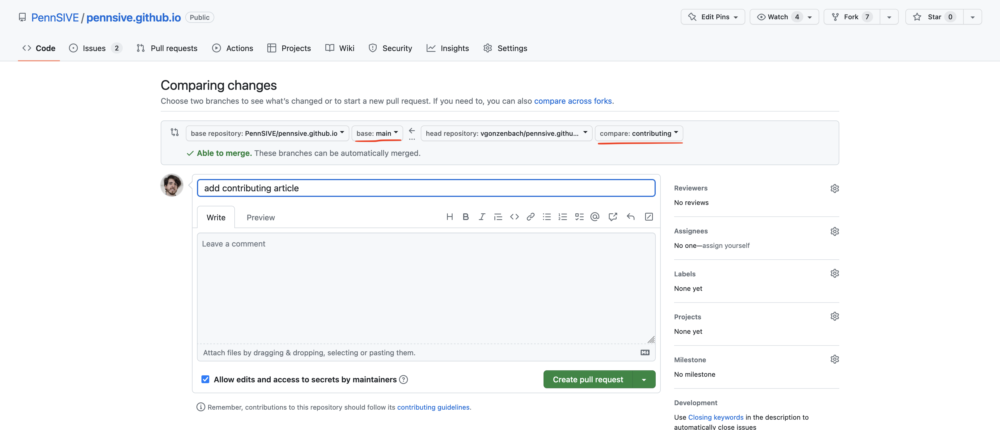

Contributing to this Wiki
Thank you for considering making a contribution to the PennSIVE wiki! In this article, you will find a streamlined set of steps that you will need to follow in order to contribute your own article to the PennSIVE wiki website.
The requirements to follow this tutorial are:
- A GitHub account.
- Have Quarto installed (comes with the latest version of Rstudio).
- Have Git installed.
- Basic markdown syntax knowledge.
In essence, making a contribution to this Wiki will involve writing or editing Markdown files and running a few git commands to integrate your changes with the existing wiki. Don’t worry you got this!
1. Fork and clone the wiki repo
The first step to collaborate on any project that is hosted on GitHub (e.g., this wiki) involves “forking”. Forking a GitHub repository (or repo for short) allows you to create your own personal copy of a project under your GitHub account. This forking mechanism allows you to back up changes you make to this wiki’s code without affecting the original repository.
To fork this wiki’s source code, follow these steps:
1. Navigate to https://github.com/pennsive/pennsive.github.io while logged in to GitHub.
2. Click Fork on the upper right hand corner. 
After forking, you can check your personal copy of the wiki’s source code under this URL: https://github.com/<your-username>/pennsive.github.io.
3. Then, clone your copy of the repository from GitHub onto your local machine. In a Terminal, run:
git clone https://github.com/<your-username>/pennsive.github.ioThis will create a folder called pennsive.github.io at the location where you run this command.
2. Link your local copy to the upstream repository
GitHub allows you to have remote copies of your git repositories. By convention, your personal remote copy of a git repository is called origin. For projects you do not own (e.g., forked projects), there is one more remote copy that you should track: the original repository, which by convention is called upstream.
To track the original PennSIVE wiki repository as the upstream repository, you can run:
cd pennsive.github.io # to get into the project folder
git remote add upstream https://github.com/pennsive/pennsive.github.io.gitTracking the upstream repo will allow you to incorporate incoming changes while you work on your contribution article. Find more details on how this is done in this article [TODO: link to section in git article]
3. Create your own branch
To keep your work organized, you will use a branch. A branch is essentially an alternative version of your repository. For more details check the git article [TODO: add link].
git checkout -b <yourusername> # if you're making multiple contributions, work on each in a separate branch and give each one a specific nameTechnically, you could work on the main branch instead of creating another branch for your work. However, branches allow you to incorporate changes easily in the event the main branch of the upstream changes (see rebasing [TODO: add link]). And you will need to be in sync with upstream when contributing your own work. So be safe: use branches.
4. Work on your contribution article
Once you are in your own branch——check that the terminal shows your branch name within parentheses——you’re ready to make changes.
In Rstudio, create a Quarto Document (i.e. a file with .qmd extension).

The first line of your document should be a top-level header with ‘#’. This header will be the title of your article, which shows up in the navigation bar of the website. Note that you should not have a YAML section in your document as it is commonly found in Rmarkdown/Quarto documents. For illustration purposes, suppose your document is named article.qmd with a header # Doing cool stuff. Then your newly created document would look like this:
# Doing cool stuffTo add the article to the navigation bar, edit the file _quarto.yml by adding the line - article.qmd under the contents section of the sidebar section. It will look something like this (... represents omitted content):
# ...
website:
# ...
sidebar:
# ...
contents:
# ...
- article.qmd
# ...Once you have added your article to the list of articles in _quarto.yml as described, you can preview the site by running quarto render in the command line OR by pressing the render button in Rstudio. Note: you need the latest version of Rstudio, which comes with Quarto, to use the latter method. 
Rendering will create (or update) .html files found under the docs/ directory: these files are the actual content that is viewed in a browser. After rendering, open docs/index.html in a browser and navigate to your article using the sidebar. Voila - A preview of your own version of the PennSIVE wiki! 
Once you’re familiar with the rendering process, it’s time to generate some content!
Write out your contribution article using markdown syntax, version control your work throughout if possible, and follow the next step when you’re ready to submit your work.
5. Integrate your work with the PennSIVE wiki
We will follow a common Git workflow to incorporate our changes to the live wiki. Before commiting your files, make sure you have rendered and previewed the results (there should be changes to the docs/ directory if you run git status)
Commit your work on your branch
First you need to make sure all your work is safe by committing it. To commit [TODO: add link] your work, first add your file to the staging area [TODO: add link].
git add article.qmd docs/article.html # replace 'article' by your file nameThen, add all other files that have been updated, this will include the _quarto.yml file .
git add -u # -u adds files that are already tracked in the repo and that have been modifiedOnce all the necessary files are in the staging area, go ahead and commit. Note: make sure that you are in your own branch and NOT on the main branch.
git commit -m 'some descriptive message'Back up your changes to GitHub before continuing:
git push origin <your-branch> Updating main (if needed)
You will need to incorporate any changes made to the wiki that may have happened after you forked. To check if changes have been made to the wiki, you need to fetch the metadata from the upstream repository.
git checkout main # you should not have uncommitted work before switching to main
git fetch upstream mainOnce the metadata has been fetched, check if your main branch is up to date
git statusIf the resulting message says ‘up to date’ you can skip to (TODO: submitting a pull request). If not follow this process:
git pull upstream main
git checkout <your-branch>
git merge mainThese three commands will (1) update your main branch to match what is in the original repository you once forked, (2) merge the updated changes from the main branch to <your-branch>. You may need to resolve merge conflicts [TODO: add link] which falls out of the scope of this. However, here’s some additional resources (TODO)
Submitting a Pull Request
After merging potential updates to the wiki as described above (or if that step was not needed), you can go ahead and push the final version of your work to GitHub.
git push origin <your-branch>Once that is successful, navigate to your GitHub account and start a Pull Request. In your copy of the repository, you will see a green button to start a pull request. As an example, here’s the pull request for the article you are currently reading.

Clicking on the Compare & pull request will take you to a page in the PennSIVE repo where you can describe your edits. Check that the name of your branch appears on the right (see underlined) and the main branch of the PennSIVE repo on the left. Then, include a descriptive summary of your proposed changes/additions. Finally, hit ‘create pull request’.
.
Once you have submitted your pull request, the site maintainer will review your changes and either accept them or ask for more edits. The status of the pull request will be publicly visible on the PennSIVE repo. If more edits are required, make more commits to your branch, push them to your repo, and these changes will appear in your pull request.

Congratulations
You have made a contribution to the PennSIVE wiki and made the world a better place!